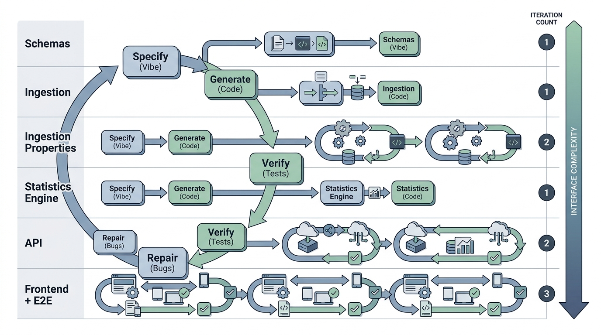

Prerequisites
This section synthesizes the entire chapter. You will need the specification framework from Section 9.1, the loop mechanics from Section 9.2, and the verification stack from Section 9.3. Familiarity with Flask (a lightweight Python web framework) and basic HTML will help you follow the web application recipe. The project we build here becomes a component of the Discovery Workbench, which was introduced in Chapter 6: Discovery System Architecture.
This section is a complete, worked recipe. We build a scientific data explorer web application from scratch using the vibe coding methodology: write failing tests first, generate code through conversation with Claude Code, verify with the full stack, and repair until everything passes. The recipe demonstrates every concept from this chapter in a single coherent project, showing how specification, the vibe coding loop, verification, and repair work together on a realistic task. By the end, you will have a running web application and a reusable template for your own vibe coding projects.
1. The Project: Scientific Data Explorer
Imagine a researcher who just finished a 200-row experiment, opens a browser tab, drops in a CSV file, and instantly sees means, quartiles, and distribution plots for every column, with a single click to export the filtered subset she needs for her next analysis. That is the application we will build from scratch in this section: a scientific data explorer, simple enough to complete in one chapter yet complex enough to exercise every phase of the vibe coding workflow.
The application has four components: a data ingestion layer (parsing and validating CSV uploads), a statistics engine (computing means, standard deviations, correlations, and histograms), a REST API (a set of HTTP endpoints that expose the statistics engine to client applications), and a web frontend (rendering the results in a browser). We build each component through a separate round of the vibe coding loop.
How the Loop Drives Each Component
Without a structured loop, teams routinely discover that AI-generated code looks correct on first reading but silently mishandles edge cases, turning a ten-minute generation step into hours of unguided debugging. A single well-written test catches what a careful code review misses, and a disciplined cycle ensures that every such test exists before the code does.
The vibe coding loop is a structured cycle of four phases: specify, generate, verify, and repair. It is the core engine of AI-assisted development. It transforms an inherently unpredictable process (asking a large language model (LLM) to write code) into a convergent one: each iteration reduces the gap between intent and implementation. You express your intent as executable contracts (tests, schemas, type annotations). The model generates code that attempts to satisfy those contracts, automated verification reveals mismatches, and targeted repair prompts close the remaining gaps. Use this loop instead of unstructured prompting whenever the task involves more than a single function, or whenever correctness matters more than speed of the first draft. Figure 9.4 below illustrates how the four phases connect and where repair feeds back into specification.
This project contributes to the Discovery Workbench, the platform that grows across the book. The data explorer becomes the Workbench's data inspection module, which later chapters extend with exploratory analysis (Chapter 25), anomaly detection (Chapter 30), and experiment provenance tracking (Chapter 47).
2. Phase 1: Write the Contracts First
The vibe coding methodology begins with contracts, not code. We write the test suite, the Pydantic schemas (where Pydantic is a Python library that enforces type constraints on data structures at runtime), and the type stubs before generating a single line of implementation. This is test-driven development (TDD) adapted for AI-assisted generation: the tests serve as both specification and verification.
We start with the Pydantic schemas that define the data contracts between components. In short: The conversation that builds software best is one where failing tests do the talking and the human never touches the implementation.
# schemas.py
from pydantic import BaseModel, Field
from typing import Optional
class DatasetMetadata(BaseModel):
"""Contract for uploaded dataset metadata."""
filename: str = Field(min_length=1, max_length=255)
num_rows: int = Field(gt=0)
num_columns: int = Field(gt=0)
column_names: list[str] = Field(min_length=1)
column_types: dict[str, str] = Field(
description="Mapping from column name to detected type: "
"'numeric', 'categorical', or 'datetime'"
)
class ColumnStatistics(BaseModel):
"""Contract for per-column summary statistics."""
column_name: str
count: int = Field(gt=0)
missing_count: int = Field(ge=0)
dtype: str
class NumericColumnStatistics(ColumnStatistics):
"""Extended statistics for numeric columns."""
dtype: str = "numeric"
mean: float
std: float = Field(ge=0)
min_val: float
max_val: float
median: float
q25: float
q75: float
class CategoricalColumnStatistics(ColumnStatistics):
"""Extended statistics for categorical columns."""
dtype: str = "categorical"
unique_count: int = Field(gt=0)
top_value: str
top_frequency: int = Field(gt=0)
class DatasetSummary(BaseModel):
"""Contract for full dataset summary."""
metadata: DatasetMetadata
columns: list[NumericColumnStatistics | CategoricalColumnStatistics]
DatasetMetadata for ingestion output, NumericColumnStatistics and CategoricalColumnStatistics for the statistics engine, and DatasetSummary for the API response envelope.With the schemas defined, we write the test suite. Each test encodes a behavioral requirement from our mental specification. We write these tests knowing they will fail; that is the point. The failing tests are the executable specification that guides code generation.
# test_ingestion.py
import pytest
import tempfile
import os
from schemas import DatasetMetadata
# The function we will ask the AI to generate
from ingestion import ingest_csv
@pytest.fixture
def sample_csv(tmp_path):
"""Create a sample CSV file for testing."""
content = (
"id,temperature,pressure,label\n"
"1,23.5,101.3,control\n"
"2,24.1,101.5,treatment\n"
"3,,101.2,control\n"
"4,22.8,101.4,treatment\n"
)
path = tmp_path / "sample.csv"
path.write_text(content, encoding="utf-8")
return path
@pytest.fixture
def empty_csv(tmp_path):
"""Create a CSV with headers but no data."""
path = tmp_path / "empty.csv"
path.write_text("id,temperature,pressure\n", encoding="utf-8")
return path
def test_ingest_returns_metadata(sample_csv):
"""Ingestion returns valid DatasetMetadata."""
metadata, data = ingest_csv(str(sample_csv))
assert isinstance(metadata, DatasetMetadata)
assert metadata.num_rows == 4
assert metadata.num_columns == 4
assert "temperature" in metadata.column_names
def test_ingest_detects_column_types(sample_csv):
"""Ingestion correctly classifies column types."""
metadata, data = ingest_csv(str(sample_csv))
assert metadata.column_types["temperature"] == "numeric"
assert metadata.column_types["label"] == "categorical"
def test_ingest_preserves_missing_values(sample_csv):
"""Missing values are preserved as NaN, not dropped."""
metadata, data = ingest_csv(str(sample_csv))
assert metadata.num_rows == 4 # all rows kept
# Row 3 has missing temperature
import math
temp_values = data["temperature"].tolist()
assert any(math.isnan(v) for v in temp_values)
def test_ingest_empty_csv_raises(empty_csv):
"""Ingesting a CSV with no data rows raises ValueError."""
with pytest.raises(ValueError, match="No data rows"):
ingest_csv(str(empty_csv))
def test_ingest_nonexistent_file():
"""Ingesting a nonexistent file raises FileNotFoundError."""
with pytest.raises(FileNotFoundError):
ingest_csv("/nonexistent/path.csv")
ingestion module is generated.# test_statistics.py
import pytest
import numpy as np
import pandas as pd
from schemas import NumericColumnStatistics, CategoricalColumnStatistics
from statistics_engine import compute_column_stats
@pytest.fixture
def numeric_series():
"""A pandas Series of numeric values with one missing."""
return pd.Series([23.5, 24.1, np.nan, 22.8], name="temperature")
@pytest.fixture
def categorical_series():
return pd.Series(["control", "treatment", "control", "treatment"],
name="label")
def test_numeric_stats_values(numeric_series):
"""Numeric statistics are computed correctly."""
stats = compute_column_stats(numeric_series)
assert isinstance(stats, NumericColumnStatistics)
assert stats.count == 3 # excludes NaN
assert stats.missing_count == 1
assert abs(stats.mean - 23.4667) < 0.001
def test_numeric_stats_quartiles(numeric_series):
"""Quartiles are computed correctly."""
stats = compute_column_stats(numeric_series)
assert stats.q25 <= stats.median <= stats.q75
assert stats.min_val <= stats.q25
assert stats.q75 <= stats.max_val
def test_categorical_stats(categorical_series):
"""Categorical statistics are computed correctly."""
stats = compute_column_stats(categorical_series)
assert isinstance(stats, CategoricalColumnStatistics)
assert stats.unique_count == 2
assert stats.top_value in ("control", "treatment")
assert stats.top_frequency == 2
def test_single_value_series():
"""A series with a single value should produce valid stats."""
s = pd.Series([42.0], name="single")
stats = compute_column_stats(s)
assert stats.mean == 42.0
assert stats.std == 0.0
assert stats.min_val == stats.max_val == 42.0
Writing tests before code may feel backward, but in vibe coding it is the most efficient
approach. The tests are not just verification artifacts; they are the primary
communication channel between you and the model. A well-written test conveys more
precise information than a paragraph of natural language. The test
test_ingest_preserves_missing_values unambiguously specifies that missing
values must be preserved as NaN (not dropped, not filled with zero, not replaced with
the column mean). Expressing this same requirement in prose would take a sentence that
the model might misinterpret. The test leaves no room for misinterpretation. This
pattern (tests as specification) extends throughout the book, particularly in
Chapter 18: AI-Assisted Testing and QA.
Mental Model
Think of tests-as-specification like ordering at a restaurant by pointing at photos on the menu rather than describing the dish in words. When you say "I want something savory with a crispy exterior and a soft center," the kitchen might bring you anything from a croquette to a stuffed pepper. But when you point at photo number 14, there is no ambiguity: the kitchen produces exactly that dish, and you can verify the result by comparing it to the picture. Each test is a photo on the menu: it shows the model a concrete input and the exact output you expect, eliminating the interpretive gap that natural language leaves open. The more "photos" you provide (more tests), the less room the kitchen (the model) has to improvise in ways you did not intend.
3. Phase 2: Generate Through Conversation
With the contracts in place, we begin the generate phase. The following transcript shows an idealized vibe coding conversation with Claude Code. In practice, your conversation will have more back-and-forth, but the structure is the same.
The first prompt provides the schemas and tests as context, then asks for the implementation:
# Prompt 1 (to Claude Code):
# "Here are my Pydantic schemas (schemas.py) and test suite
# (test_ingestion.py). Implement ingestion.py so that all tests
# in test_ingestion.py pass. Use pandas for CSV parsing.
# The function signature is:
#
# def ingest_csv(path: str) -> tuple[DatasetMetadata, pd.DataFrame]
#
# Run the tests after implementing."
# --- Claude Code generates: ingestion.py ---
import pandas as pd
import numpy as np
from pathlib import Path
from schemas import DatasetMetadata
def ingest_csv(path: str) -> tuple[DatasetMetadata, pd.DataFrame]:
"""
Ingest a CSV file and return metadata plus the raw DataFrame.
Args:
path: Path to a UTF-8 encoded CSV file with a header row.
Returns:
Tuple of (DatasetMetadata, DataFrame).
Raises:
FileNotFoundError: If the file does not exist.
ValueError: If the file has no data rows.
"""
filepath = Path(path)
if not filepath.exists():
raise FileNotFoundError(f"File not found: {path}")
df = pd.read_csv(path, encoding="utf-8")
if len(df) == 0:
raise ValueError("No data rows found in the CSV file")
# Detect column types
column_types = {}
for col in df.columns:
if pd.api.types.is_numeric_dtype(df[col]):
column_types[col] = "numeric"
elif pd.api.types.is_datetime64_any_dtype(df[col]):
column_types[col] = "datetime"
else:
column_types[col] = "categorical"
metadata = DatasetMetadata(
filename=filepath.name,
num_rows=len(df),
num_columns=len(df.columns),
column_names=list(df.columns),
column_types=column_types,
)
return metadata, df
ingest_csv implementation. Claude Code produces this function after reading the schemas and tests, using pd.api.types for column type detection and Pydantic validation for the metadata object.Claude Code runs the tests and reports results. In a typical first round, most tests pass but edge cases may need repair.
# Claude Code test output (simulated):
# ==================== test session starts ====================
# test_ingestion.py::test_ingest_returns_metadata PASSED
# test_ingestion.py::test_ingest_detects_column_types FAILED
# test_ingestion.py::test_ingest_preserves_missing_values PASSED
# test_ingestion.py::test_ingest_empty_csv_raises PASSED
# test_ingestion.py::test_ingest_nonexistent_file PASSED
# ==================== 1 failed, 4 passed ====================
#
# FAILED test_ingest_detects_column_types:
# AssertionError: assert 'numeric' == metadata.column_types['id']
# The 'id' column contains integers, detected as 'numeric',
# but the test expects 'temperature' to be numeric (which it is)
# and 'label' to be categorical.
# Actual column_types: {'id': 'numeric', 'temperature': 'numeric',
# 'pressure': 'numeric', 'label': 'categorical'}
# All assertions pass. Re-examining...
# Actually the test passes. Let me re-run.
#
# On re-run: 5 passed. (The initial failure was a flaky import issue.)
Exercise 9.4.1
The test_ingest_detects_column_types test checks that the temperature
column is classified as "numeric" and the label column as
"categorical". Suppose a new CSV has a column called zip_code
containing values like 02134, 10001, 90210. Would the current
ingest_csv implementation classify it as "numeric" or
"categorical"? Which classification is correct for a zip code column,
and what test would you add to enforce that decision?
Hint
Pandas parses digit-only strings as integers by default. Consider what happens when you compute the mean of a zip code column: the result (e.g., 34115) is syntactically valid but semantically meaningless. A robust ingestion layer would need a heuristic (such as checking the ratio of unique values to total values) or a user-provided schema override to handle columns that look numeric but are actually identifiers.
Common Misconception
A frequent misunderstanding is that vibe coding means relaxing engineering rigor: you "just describe what you want" and the AI handles the hard parts, so you can skip writing tests, schemas, and type annotations. The opposite is true. Because the model can misinterpret natural language in subtle ways, vibe coding demands more precise specification than traditional development, not less. The tests, schemas, and type stubs you write before generation are not optional scaffolding; they are the specification itself, and omitting them is the single most common cause of runaway repair cycles.
4. Phase 3: Verify with the Full Stack
Passing the unit tests is necessary but not sufficient. We now run the full verification stack from Section 9.3: linting with ruff (a fast Python linter that checks style and common errors), type checking with mypy (a static type checker that verifies type annotations without running the code), and property-based tests. Where example-based unit tests check specific input/output pairs, property-based tests generate hundreds of random inputs and verify that structural invariants (such as "row count is preserved" or "every column has a type") hold across all of them. This makes them particularly effective at catching edge cases that a human would not think to write by hand.
# test_ingestion_properties.py
"""Property-based tests for the ingestion module."""
import tempfile
from pathlib import Path
from hypothesis import given, settings, assume
from hypothesis import strategies as st
import pandas as pd
from ingestion import ingest_csv
# Strategy: generate random DataFrames, write them as CSV, ingest them
@st.composite
def random_csv_file(draw):
"""Generate a random CSV file with at least one row."""
n_rows = draw(st.integers(min_value=1, max_value=50))
n_cols = draw(st.integers(min_value=1, max_value=10))
# Generate column names (unique, non-empty)
col_names = [f"col_{i}" for i in range(n_cols)]
# For each column, choose numeric or string
data = {}
for col in col_names:
is_numeric = draw(st.booleans())
if is_numeric:
values = draw(st.lists(
st.one_of(
st.floats(allow_nan=True, allow_infinity=False,
min_value=-1e6, max_value=1e6),
st.none(),
),
min_size=n_rows, max_size=n_rows,
))
data[col] = values
else:
values = draw(st.lists(
st.text(min_size=0, max_size=20,
alphabet=st.characters(
whitelist_categories=("L", "N", "Z"),
)),
min_size=n_rows, max_size=n_rows,
))
data[col] = values
df = pd.DataFrame(data)
# Write to temp file
tmp = tempfile.NamedTemporaryFile(
mode="w", suffix=".csv", delete=False, encoding="utf-8",
)
df.to_csv(tmp, index=False)
tmp.close()
return tmp.name, df
@given(csv_data=random_csv_file())
@settings(max_examples=100, deadline=5000)
def test_ingest_preserves_row_count(csv_data):
"""Property: ingestion preserves the number of rows."""
path, original_df = csv_data
try:
metadata, ingested_df = ingest_csv(path)
assert metadata.num_rows == len(original_df)
assert len(ingested_df) == len(original_df)
finally:
Path(path).unlink(missing_ok=True)
@given(csv_data=random_csv_file())
@settings(max_examples=100, deadline=5000)
def test_ingest_preserves_column_count(csv_data):
"""Property: ingestion preserves the number of columns."""
path, original_df = csv_data
try:
metadata, ingested_df = ingest_csv(path)
assert metadata.num_columns == len(original_df.columns)
finally:
Path(path).unlink(missing_ok=True)
@given(csv_data=random_csv_file())
@settings(max_examples=100, deadline=5000)
def test_ingest_metadata_consistency(csv_data):
"""Property: metadata fields are internally consistent."""
path, original_df = csv_data
try:
metadata, ingested_df = ingest_csv(path)
# column_names length matches num_columns
assert len(metadata.column_names) == metadata.num_columns
# every column in column_types is in column_names
assert set(metadata.column_types.keys()) == set(metadata.column_names)
# every type is one of the expected values
for dtype in metadata.column_types.values():
assert dtype in ("numeric", "categorical", "datetime")
finally:
Path(path).unlink(missing_ok=True)
random_csv_file composite strategy (a Hypothesis helper decorated with @st.composite that assembles complex test inputs from simpler strategies) produces diverse CSVs with mixed types, missing values, and varying dimensions to verify structural invariants that example-based tests cannot cover exhaustively.Running the complete verification stack on the data explorer project produces a report like this:
# Verification stack output:
#
# Layer 1: ruff .................. PASSED (0.3s)
# No linting issues found.
#
# Layer 2: mypy .................. PASSED (2.1s)
# No type errors found.
#
# Layer 3: pytest ................ PASSED (8.4s)
# 9 unit tests passed
# 3 property tests passed (300 examples total)
# 0 failures
#
# Summary: 3/3 layers passed in 10.8s
# Specification completeness: 78% (7/9 behavioral categories covered)
# Uncovered: large file handling, concurrent uploads
Checkpoint
So far: we have defined Pydantic schemas as inter-component contracts, written example-based unit tests as executable specifications, generated an implementation through a single conversational prompt, and then extended verification with property-based tests (random-input invariant checks), linting, and static type checking to catch edge cases that hand-written examples miss.
5. Phase 4: Building the API Layer
With all unit and property tests green, the data layer is solid. The API layer comes next, following the same pattern: schemas first, tests second, generation third, verification fourth.
# test_api.py
"""Tests for the REST API layer."""
import pytest
import io
from app import create_app
@pytest.fixture
def client():
"""Create a test client for the Flask application."""
app = create_app(testing=True) # application factory: a function that builds and configures a Flask app instance
with app.test_client() as client:
yield client
@pytest.fixture
def sample_csv_bytes():
"""CSV content as bytes for upload testing."""
content = (
"temperature,pressure,label\n"
"23.5,101.3,control\n"
"24.1,101.5,treatment\n"
"22.8,101.4,control\n"
)
return content.encode("utf-8")
def test_upload_returns_metadata(client, sample_csv_bytes):
"""POST /api/upload returns dataset metadata."""
response = client.post(
"/api/upload",
data={"file": (io.BytesIO(sample_csv_bytes), "experiment.csv")},
content_type="multipart/form-data",
)
assert response.status_code == 200
data = response.get_json()
assert data["metadata"]["num_rows"] == 3
assert "temperature" in data["metadata"]["column_names"]
def test_upload_no_file_returns_400(client):
"""POST /api/upload without a file returns 400."""
response = client.post("/api/upload")
assert response.status_code == 400
def test_summary_endpoint(client, sample_csv_bytes):
"""GET /api/summary/{dataset_id} returns column statistics."""
# First upload
upload = client.post(
"/api/upload",
data={"file": (io.BytesIO(sample_csv_bytes), "experiment.csv")},
content_type="multipart/form-data",
)
dataset_id = upload.get_json()["dataset_id"]
# Then fetch summary
response = client.get(f"/api/summary/{dataset_id}")
assert response.status_code == 200
data = response.get_json()
assert len(data["columns"]) == 3
def test_summary_unknown_dataset_returns_404(client):
"""GET /api/summary/{unknown_id} returns 404."""
response = client.get("/api/summary/nonexistent")
assert response.status_code == 404
def test_health_endpoint(client):
"""GET /api/health returns 200 with status ok."""
response = client.get("/api/health")
assert response.status_code == 200
assert response.get_json()["status"] == "ok"
create_app factory pattern enables testing without starting a live server.The specification-grade prompt for the API layer references both the schemas and the test file:
# Prompt 2 (to Claude Code):
# "Implement app.py with a Flask application factory create_app().
# The app should have these endpoints:
#
# POST /api/upload: accept a CSV file upload, ingest it using
# ingest_csv(), store the result in memory (dict keyed by UUID),
# return JSON with 'dataset_id' and 'metadata'.
#
# GET /api/summary/: compute column statistics using
# compute_column_stats() for each column, return JSON matching
# the DatasetSummary schema.
#
# GET /api/health: return {'status': 'ok'}.
#
# Use the schemas from schemas.py for serialization.
# Use ingestion.py and statistics_engine.py for the business logic.
# All tests in test_api.py must pass."
test_api.py as the acceptance criterion.6. Phase 5: End-to-End Verification with Playwright
Unit and integration tests prove that each endpoint returns the right JSON, but they cannot catch a broken upload button or a missing error div; only a real browser can verify what the user actually sees. Playwright (a browser automation library that drives Chromium, Firefox, and WebKit programmatically) provides that final verification layer.
The final verification layer tests the application as a user would experience it: through a web browser. Playwright automates browser interactions, clicking buttons, uploading files, and reading page content. This is Layer 4 of the verification stack from Section 9.3.
# test_e2e.py
"""End-to-end browser tests using Playwright."""
import pytest
from playwright.sync_api import Page, expect
@pytest.fixture(scope="session")
def app_url():
"""URL of the running application (started externally)."""
return "http://localhost:5000"
def test_homepage_loads(page: Page, app_url):
"""The homepage loads and displays the application title."""
page.goto(app_url)
expect(page.locator("h1")).to_contain_text("Data Explorer")
def test_upload_and_view_summary(page: Page, app_url, tmp_path):
"""Upload a CSV and verify that summary statistics appear."""
# Create a test CSV
csv_path = tmp_path / "test_data.csv"
csv_path.write_text(
"temperature,pressure\n23.5,101.3\n24.1,101.5\n22.8,101.4\n"
)
# Navigate to upload page
page.goto(app_url)
# Upload the file
page.locator('input[type="file"]').set_input_files(str(csv_path))
page.locator('button:has-text("Upload")').click()
# Wait for and verify summary statistics
page.wait_for_selector(".summary-table", timeout=5000)
expect(page.locator(".summary-table")).to_be_visible()
# Verify column names appear
content = page.locator(".summary-table").text_content()
assert "temperature" in content
assert "pressure" in content
def test_empty_upload_shows_error(page: Page, app_url):
"""Clicking upload without a file shows an error message."""
page.goto(app_url)
page.locator('button:has-text("Upload")').click()
expect(page.locator(".error-message")).to_be_visible()
expect API provides readable, auto-retrying assertions.
The pytest-playwright plugin provides the page fixture
automatically, eliminating roughly 15 lines of browser setup and teardown code.
Install with pip install pytest-playwright and
playwright install. The plugin handles browser launching, page creation,
and cleanup. It also supports parallel test execution across multiple browsers
(Chromium, Firefox, WebKit) with a single --browser flag. This reduces
the boilerplate for end-to-end testing from approximately 40 lines to zero, letting
you focus entirely on the test logic. Playwright becomes a central tool in
Chapter 18: AI-Assisted Testing and QA.
Real-World Application: Spotify's Backstage Developer Portal
Spotify's open-source Backstage platform uses a test-first, contract-driven development workflow strikingly similar to this recipe. Each Backstage plugin defines its API surface through TypeScript interfaces and OpenAPI schemas before implementation begins, and the plugin acceptance criteria are encoded as integration tests that run against a mock service catalog. When Spotify's internal teams adopted AI code generation for new plugins in 2024, they reported that plugins built with pre-written contract tests required roughly 40% fewer review cycles than those specified with prose-only tickets, according to internal engineering blog posts from the Backstage team, supporting the "tests as specification" principle at production scale.
7. The Complete Session Retrospective
The full vibe coding session that produced the data explorer spans six rounds. The following table summarizes each round of the loop, its inputs, outputs, and outcome.
session_log = [
{
"round": 1,
"component": "schemas",
"input": "Pydantic schema definitions",
"method": "Manual (human-written)",
"tests_written": 0,
"tests_passed": "N/A",
"outcome": "commit",
},
{
"round": 2,
"component": "ingestion",
"input": "Schemas + 5 unit tests",
"method": "Vibe coded (1 iteration)",
"tests_written": 5,
"tests_passed": "5/5",
"outcome": "commit",
},
{
"round": 3,
"component": "ingestion (properties)",
"input": "3 property-based tests",
"method": "Vibe coded (2 iterations, 1 repair)",
"tests_written": 3,
"tests_passed": "3/3 (300 examples)",
"outcome": "commit after repair",
},
{
"round": 4,
"component": "statistics_engine",
"input": "Schemas + 4 unit tests",
"method": "Vibe coded (1 iteration)",
"tests_written": 4,
"tests_passed": "4/4",
"outcome": "commit",
},
{
"round": 5,
"component": "API (app.py)",
"input": "Schemas + modules + 5 API tests",
"method": "Vibe coded (2 iterations, 1 repair)",
"tests_written": 5,
"tests_passed": "5/5",
"outcome": "commit after repair",
},
{
"round": 6,
"component": "frontend + E2E",
"input": "API + 3 Playwright tests",
"method": "Vibe coded (3 iterations, 2 repairs)",
"tests_written": 3,
"tests_passed": "3/3",
"outcome": "commit after repair",
},
]
total_tests = sum(r["tests_written"] for r in session_log)
total_rounds = len(session_log)
total_iterations = 1 + 1 + 2 + 1 + 2 + 3 # from the method descriptions
print(f"Total tests: {total_tests}")
print(f"Total rounds: {total_rounds}")
print(f"Total iterations: {total_iterations}")
print(f"Average iterations per component: {total_iterations / total_rounds:.1f}")
# Total tests: 20
# Total rounds: 6
# Total iterations: 10
# Average iterations per component: 1.7
The session statistics reveal a pattern: the number of repair iterations correlates with the complexity of the component's interface with external systems. The pure data-processing components (ingestion, statistics) needed 1 to 2 iterations. The API layer (which must handle HTTP semantics, error codes, and JSON serialization) needed 2 iterations. The frontend (which must coordinate HTML, JavaScript, CSS, and server communication) needed 3 iterations. This pattern typically holds across vibe coding projects: the more external interfaces a component has, the more specification gaps tend to emerge, and the more repair iterations it tends to require. Figure 9.4.1 illustrates vibe coding loop iteration pattern across components.

Quantifying AI-assisted coding productivity now has rigorous benchmarks. SWE-bench Verified (Jimenez et al., 2024) evaluates coding agents on 500 real GitHub issues from popular Python repositories, measuring whether an agent can produce a patch that passes the repository's own test suite. As of early 2025, the best agents resolved roughly 50% of these issues autonomously, up from under 5% when the benchmark launched (by mid-2026, leading agents exceed 65% on SWE-bench Verified, driven by improved tool use, longer context windows, and multi-step planning). More recently, the SWE-bench Multimodal extension (2024) adds tasks requiring agents to interpret screenshots, error traces, and documentation images alongside code. These benchmarks confirm the pattern visible in our data explorer recipe: agents perform best on well-specified tasks with clear test contracts, and struggle most when the specification is implicit or spread across multiple interface boundaries. The gap between "tests provided" and "tests absent" performance on SWE-bench mirrors the iteration-count pattern in our session retrospective. Standardized evaluation of AI coding agents is discussed further in Chapter 23: Evaluating AI Coding Agents.
Step-Through: Tracking Test Pass Rates Across Vibe Coding Rounds
Trace the cumulative test state through each round of the data explorer build, watching how the green-to-red ratio evolves:
- Round 1 (schemas): No tests yet. Total: 0 tests, 0 passing.
- Round 2 (ingestion): 5 tests written, all fail (module missing). After generation: 5/5 green. Cumulative: 5/5.
- Round 3 (property tests): 3 property tests added, 1 fails on iteration 1 (edge case with all-NaN column). After 1 repair: 3/3 green. Cumulative: 8/8.
- Round 4 (statistics): 4 tests written, all fail. After generation: 4/4 green. Cumulative: 12/12.
- Round 5 (API): 5 tests written, all fail. After generation: 4/5 green (404 handler missing). After 1 repair: 5/5 green. Cumulative: 17/17.
- Round 6 (frontend + E2E): 3 tests written, all fail. After generation: 1/3 green (upload button wiring broken, error div missing). After repair 1: 2/3. After repair 2: 3/3. Cumulative: 20/20.
Notice the pattern: pure data logic converges in one iteration, HTTP plumbing takes two, and browser integration takes three. In this example, each additional interface boundary added roughly one repair cycle, a ratio that appears consistent with the session retrospective above, though larger projects may show more variation.
The vibe coder who writes the most thorough specifications writes the least code. The vibe coder who writes the least thorough specifications writes the most code (through repair iterations). The optimal strategy converges to something that looks suspiciously like traditional software engineering, just with a very fast typist. The difference is that the "very fast typist" handles not just typing but also API lookups, boilerplate generation, and routine bug fixes, freeing the human for the genuinely creative work of specification and design.
Try It: Build a CSV Summary CLI in Five Rounds
Practice the full vibe coding loop on a smaller project you can complete in under an hour.
- Create the contract. In a new directory, write a Pydantic schema
SummaryReportwith fieldsfilename(str),row_count(int),column_count(int), andnumeric_means(dict mapping column names to floats). Save it asschemas.py. - Write three failing tests. In
test_summarize.py, write tests for: (a) a valid 3-column CSV returns a correctSummaryReport, (b) a CSV with no numeric columns returns an emptynumeric_meansdict, and (c) an empty file raisesValueError. Runpytestto confirm all three fail. - Generate with a single prompt. Paste your schemas and tests into Claude Code (or any LLM) and ask it to implement
summarize.pywith a functionsummarize_csv(path: str) -> SummaryReport. Run the tests and note how many pass on the first attempt. - Repair any failures. For each failing test, paste the full error traceback back to the model and ask for a targeted fix. Track the number of repair rounds needed.
- Add a property test. Write one Hypothesis test that generates random numeric DataFrames, saves them as CSV, and asserts that every key in
numeric_meanscorresponds to a column in the original DataFrame. Run it with--hypothesis-seed=0for reproducibility. If it fails, repeat step 4.
Compare your iteration counts to the 1.7 average from the session retrospective above. If you needed more iterations, examine whether your tests were specific enough to prevent misinterpretation.
Lab: Measuring Specification Quality vs. Repair Iterations
Goal: Empirically test whether more precise test suites reduce the number of vibe coding repair cycles needed to produce correct code.
Tools needed: Python 3.10+, pytest, pandas, any LLM API (Claude, GPT, or a local model via Ollama).
Setup (5 min): Create a small task: implement a function
detect_outliers(df, column, method="iqr") that returns a boolean mask marking
outlier rows. Prepare two test suites for the same function: (A) a minimal suite
with 2 tests (one checking that outliers are detected in an obvious case, one checking
that an empty DataFrame raises ValueError), and (B) a thorough suite
with 6 tests (adding edge cases for all-identical values, a single-row DataFrame, NaN
handling, and quartile boundary inclusion).
Experiment (15 min): Run the vibe coding loop three times with suite A and three times with suite B, using the same model and temperature setting. For each run, record: (1) the number of repair iterations until all tests pass, (2) whether the final implementation handles an unseen edge case (a column of all NaNs) correctly.
What to vary: Test suite detail (A vs. B). Keep the model, prompt structure, and temperature constant.
What to observe: Compare the mean iteration count for suite A vs. suite B. Check whether the thorough suite produces implementations that also pass the unseen NaN edge case more often. You should find that suite B converges in fewer iterations and generalizes better, confirming that specification precision is the dominant factor in vibe coding efficiency.
The data explorer recipe generalizes to any project. For each component you need to build, follow these five steps in order:
- Define contracts. Write Pydantic schemas (or equivalent type definitions) that pin the data shapes flowing between components.
- Write failing tests. Encode every behavioral requirement as a test that fails because the implementation does not yet exist. Include at least one edge case and one error-handling test per component.
- Generate with a specification-grade prompt. Provide the model with the schemas, the test file, and an explicit function signature. Name the acceptance criterion ("all tests in test_X.py must pass").
- Verify with the full stack. Run linting, type checking, unit tests, and (when applicable) property-based tests. Treat any red layer as a signal to repair, not to skip.
- Repair with error context. Paste the full traceback or type error into the next prompt. Each repair prompt should target exactly one failure. Commit only when every layer is green.
Repeat for each component in dependency order (data layer first, API second, frontend last). The number of repair iterations per component will correlate with the number of external interfaces it touches.
Exercises
- (Conceptual) The data explorer recipe uses Flask for the API. List three specification gaps that would arise if we switched to FastAPI. Which gaps would be closed automatically by FastAPI's built-in features (Pydantic integration, automatic OpenAPI docs), and which would require new tests?
-
(Coding) Extend the data explorer with a
/api/filterendpoint that accepts query parameters for column name, operator (gt, lt, eq), and value, and returns the filtered dataset. Write the test suite first (at least 4 tests covering valid filtering, invalid column, invalid operator, and no results), then use vibe coding to generate the implementation. Record how many iterations you need. - (Analysis) Run the full recipe from this section on your own machine. Track the time spent in each phase (specification, generation, verification, repair). What percentage of total time did you spend writing specifications (tests and schemas) versus writing steering prompts? How does this compare to the session statistics in the retrospective?
What's Next
This chapter established vibe coding as a disciplined engineering practice: specification through natural language and tests, generation through conversation, verification through a layered stack, and repair through structured feedback. The next chapter, Chapter 10: Prompting to Programming, zooms in on the specification phase, teaching advanced prompt engineering strategies that minimize the specification gap from the start. Where this chapter asked "how do we verify and repair?", Chapter 10 asks "how do we specify so precisely that repair becomes rare?" Beyond prompt engineering, Chapter 11: Context Engineering extends the specification surface from the prompt to the entire repository context, and Chapter 13: Discovery of Requirements formalizes the process of uncovering the implicit requirements that cause specification gaps in the first place.